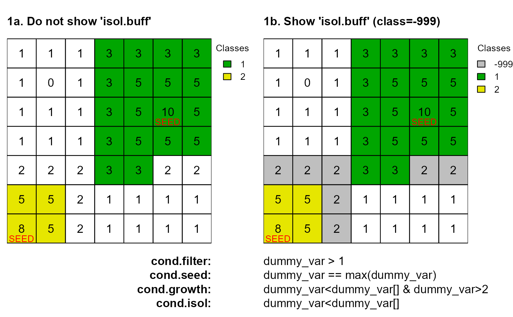
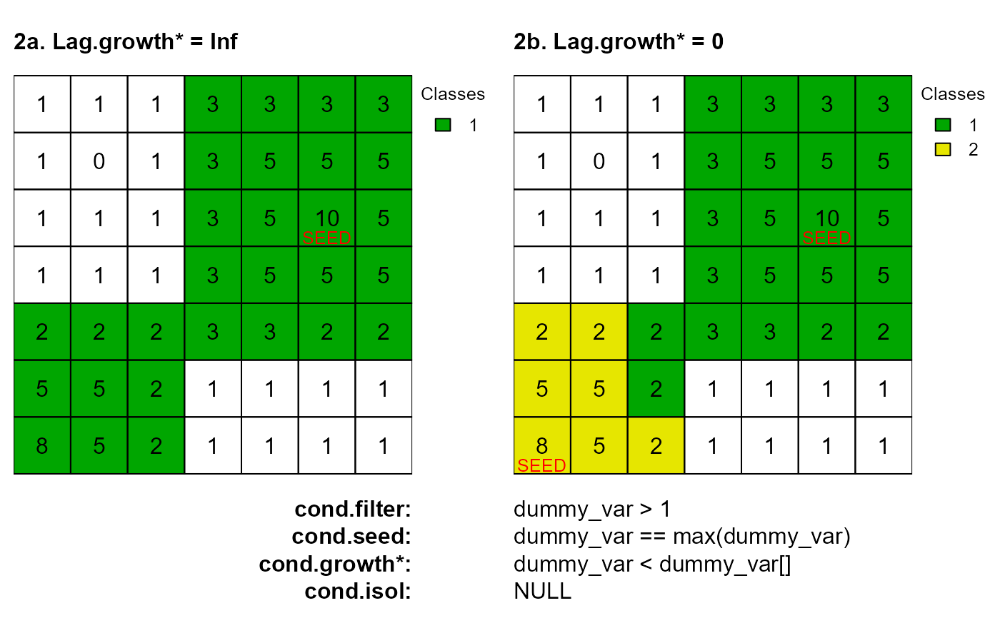
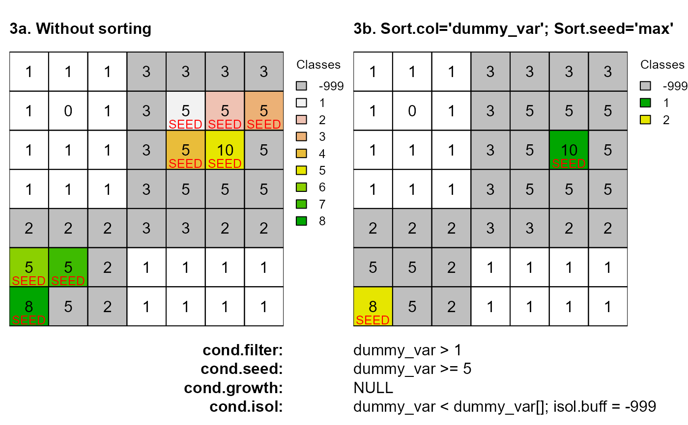

Returns a vector of cell numbers at the locations of seed cells and growth buffers.
anchor.seed(
attTbl,
ngbList,
rNumb = FALSE,
class = NULL,
cond.filter = NULL,
cond.seed,
cond.growth = NULL,
lag.growth = Inf,
cond.isol = NULL,
lag.isol = 1,
sort.col = NULL,
sort.seed = "max",
saveRDS = NULL,
overWrite = FALSE,
isol.buff = FALSE,
silent = FALSE
)data.frame, the attribute table returned by the function
attTbl.
list, the list of neighborhoods returned by the function
ngbList.
logic, the neighborhoods of the argument ngbList are
identified by cell numbers (rNumb=FALSE) or by row numbers
(rNumb=TRUE) (see ngbList). It is advised to use row
numbers for large rasters.
numeric, the classification number to assign to all cells that
meet the function conditions. If NULL, a new class number is
assigned every time a new seed cell is identified. Growth buffers have the
same classification number as the seed cell to which they refer.
character string, defines for what cells the arguments
cond.seed, cond.growth and cond.isol have to be
evaluated. It can be NULL. Absolute conditions can be used (see
conditions).
character string, the conditions to identify seed cells.
Absolute conditions can be used (see conditions). It cannot
be NULL.
character string, the conditions to define a growth buffer
around seed cells. It can be NULL. Absolute and focal cell
conditions can be used (see conditions).
0 or Inf, defines the evaluation lag of focal cell
conditions in cond.growth.
character string, the conditions to define an isolation
buffer around seed cells and growth buffers. It can be NULL.
Absolute and focal cell conditions can be used (see
conditions).
0 or Inf, defines the evaluation lag of focal cell
conditions in cond.isol.
character, the column name in the attTbl on which the
sort.seed is based on. It determines in what order seed buffers are
computed.
character, the order seed buffers are computed is based on
the value seed cells have in the column of attribute table column named
sort.col. If sort.seed="max", buffers are computed from the
seed cell having the maximum value to the seed cell having the minimum
value. If sort.seed="min", buffers are computed in the opposite
order.
filename, if a file name is provided save the class vector as an RDS file.
logic, if the RDS names already exist, existing files are overwritten.
logic, return the isolation buffer (class = -999).
logic, progress is not printed on the console.
Class vector. See conditions for more details about
class vectors.
This function implements an algorithm to identify seed cells, growth
buffers and isolation buffers.
Condition arguments
The function takes as inputs four sets of conditions with
cond.growth and cond.isol taking into account class
contiguity and continuity (see conditions):
cond.filter, the conditions to define what cells have to be
evaluated by the function.
cond.seed, the conditions to identify, at each iteration, the
seed cell. The seed cell is the cell around which growth and isolation
conditions are applied.
cond.growth, the conditions to define a buffer around the
seed cell.
cond.isol, the conditions to isolate one seed cell (and its
growth buffer) from another.
Iterations
The argument cond.filter defines the set of cells to be considered
by the function.
A seed cell is identified based on cond.seed and receives a
classification number as specified by the argument class. If
class=NULL, then a new class is assigned to every new seed cell.
Cells connected with the seed cell meeting the conditions of
cond.growth are assigned to the same class of the seed cell (growth
buffer). The rule evaluation take into account class continuity (see
conditions).
Cells connected with the seed cell (or with its growth buffer) meeting
the conditions of cond.isol are assigned to the isolation buffer
(class = -999). The rule evaluation take into account class
continuity (see conditions).
A new seed cell is identified based on cond.seed which is now
only evaluated for cells that were not identified as seed, growth or
isolation cells in previous iterations.
A new iteration starts. Seed, growth and isolation cells identified in previous iteration are ignored in successive iterations.
The function stops when it cannot identify any new seed cell.
Relative focal cell conditions and evaluation lag
The arguments lag.growth and lag.isol control the
evaluation lag of relative focal cell conditions (see
conditions).
When lag.* are set to 0, relative focal cell conditions
have a standard behavior and compare the values of the test cells
against the value of the focal cell.
When lag.* are set to Inf, relative focal cell conditions
compare the values of the test cells against the value of the
seed cell identified at the start of the iteration.
# DUMMY DATA
############################################################################
# LOAD LIBRARIES
library(scapesClassification)
library(terra)
# LOAD THE DUMMY RASTER
r <- list.files(system.file("extdata", package = "scapesClassification"),
pattern = "dummy_raster\\.tif", full.names = TRUE)
r <- terra::rast(r)
# COMPUTE THE ATTRIBUTE TABLE
at <- attTbl(r, "dummy_var")
# COMPUTE THE LIST OF NEIGBORHOODS
nbs <- ngbList(r)
############################################################################
# EXAMPLE PLOTS
############################################################################
oldpar <- par(mfrow = c(1,2))
m <- c(4.5, 0.5, 2, 3.2)
# 1a. Do not show isol.buff
as <- anchor.seed(attTbl = at, ngbList = nbs, rNumb = FALSE, class = NULL, silent = TRUE,
cond.filter = "dummy_var > 1", cond.seed = "dummy_var == max(dummy_var)",
cond.growth = "dummy_var<dummy_var[] & dummy_var>2",
cond.isol = "dummy_var<dummy_var[]")
plot(cv.2.rast(r,classVector=as), type="classes", mar=m, col=c("#00A600", "#E6E600"),
axes=FALSE, plg=list(x=1, y=1, cex=.80, title="Classes"))
text(r); lines(r)
mtext(side=3, line=0, cex=1, font=2, adj=0, "1a. Do not show 'isol.buff'")
mtext(side=1, line=0, cex=1, font=2, adj=1, "cond.filter:")
mtext(side=1, line=1, cex=1, font=2, adj=1, "cond.seed:")
mtext(side=1, line=2, cex=1, font=2, adj=1, "cond.growth:")
mtext(side=1, line=3, cex=1, font=2, adj=1, "cond.isol:")
text(xFromCell(r,c(20,43)),yFromCell(r,c(20,43))-0.05,"SEED",col="red",cex=0.80)
# 1b. Show isol.buff
as <- anchor.seed(attTbl = at, ngbList = nbs, rNumb = FALSE, class = NULL, silent = TRUE,
cond.filter = "dummy_var > 1", cond.seed = "dummy_var == max(dummy_var)",
cond.growth = "dummy_var<dummy_var[] & dummy_var>2",
cond.isol = "dummy_var<dummy_var[]", isol.buff = TRUE)
plot(cv.2.rast(r,classVector=as), type="classes", col=c("#00000040", "#00A600", "#E6E600"),
mar=m, axes=FALSE, plg=list(x=1, y=1, cex=.80, title="Classes"))
text(r); lines(r)
mtext(side=3, line=0, cex=1, font=2, adj=0, "1b. Show 'isol.buff' (class=-999)")
mtext(side=1, line=0, cex=1, adj=0, "dummy_var > 1")
mtext(side=1, line=1, cex=1, adj=0, "dummy_var == max(dummy_var)")
mtext(side=1, line=2, cex=1, adj=0, "dummy_var<dummy_var[] & dummy_var>2")
mtext(side=1, line=3, cex=1, adj=0, "dummy_var<dummy_var[]")
text(xFromCell(r,c(20,43)),yFromCell(r,c(20,43))-0.05,"SEED",col="red",cex=0.80)

# 2a. Lag.growth = Inf
as <- anchor.seed(attTbl = at, ngbList = nbs, rNumb = FALSE, class = NULL, silent = TRUE,
cond.filter = "dummy_var > 1", cond.seed = "dummy_var == max(dummy_var)",
cond.growth = "dummy_var<dummy_var[]", lag.growth = Inf)
plot(cv.2.rast(r,classVector=as), type="classes", mar=m, col=c("#00A600"),
axes=FALSE, plg=list(x=1, y=1, cex=.80, title="Classes"))
text(r); lines(r)
mtext(side=3, line=0, cex=1, font=2, adj=0, "2a. Lag.growth* = Inf")
mtext(side=1, line=0, cex=1, font=2, adj=1, "cond.filter:")
mtext(side=1, line=1, cex=1, font=2, adj=1, "cond.seed:")
mtext(side=1, line=2, cex=1, font=2, adj=1, "cond.growth*:")
mtext(side=1, line=3, cex=1, font=2, adj=1, "cond.isol:")
text(xFromCell(r,c(20)),yFromCell(r,c(20))-0.05,"SEED",col="red",cex=0.80)
# 2b. Lag.growth = 0
as <- anchor.seed(attTbl = at, ngbList = nbs, rNumb = FALSE, class = NULL, silent = TRUE,
cond.filter = "dummy_var > 1", cond.seed = "dummy_var == max(dummy_var)",
cond.growth = "dummy_var<dummy_var[]", lag.growth = 0)
plot(cv.2.rast(r,classVector=as), type="classes", mar=m, col=c("#00A600", "#E6E600"),
axes=FALSE, plg=list(x=1, y=1, cex=.80, title="Classes"))
text(r); lines(r)
mtext(side=3, line=0, cex=1, font=2, adj=0, "2b. Lag.growth* = 0")
mtext(side=1, line=0, cex=1, adj=0, "dummy_var > 1")
mtext(side=1, line=1, cex=1, adj=0, "dummy_var == max(dummy_var)")
mtext(side=1, line=2, cex=1, adj=0, "dummy_var < dummy_var[]")
mtext(side=1, line=3, cex=1, adj=0, "NULL")
text(xFromCell(r,c(20,43)),yFromCell(r,c(20,43))-0.05,"SEED",col="red",cex=0.80)

# 3a. Without sorting
as <- anchor.seed(attTbl = at, ngbList = nbs, rNumb = FALSE, class = NULL, silent = TRUE,
cond.filter = "dummy_var > 1", cond.seed = "dummy_var >= 5",
cond.isol = "dummy_var<dummy_var[]", isol.buff = TRUE)
seeds <- which(!is.na(as) & as !=-999)
cc <- c("#00000040", terrain.colors(8)[8:1])
plot(cv.2.rast(r,classVector=as), type="classes", mar=m, col=cc,
axes=FALSE, plg=list(x=1, y=1, cex=.80, title="Classes"))
text(r); lines(r)
mtext(side=3, line=0, cex=1, font=2, adj=0, "3a. Without sorting")
mtext(side=1, line=0, cex=1, font=2, adj=1, "cond.filter:")
mtext(side=1, line=1, cex=1, font=2, adj=1, "cond.seed:")
mtext(side=1, line=2, cex=1, font=2, adj=1, "cond.growth:")
mtext(side=1, line=3, cex=1, font=2, adj=1, "cond.isol:")
text(xFromCell(r,seeds),yFromCell(r,seeds)-0.05,"SEED",col="red",cex=0.80)
# 3b. Sort buffer evaluation based on 'dummy_var' values
as <- anchor.seed(attTbl = at, ngbList = nbs, rNumb = FALSE, class = NULL, silent = TRUE,
cond.filter = "dummy_var > 1", cond.seed = "dummy_var >= 5",
cond.isol = "dummy_var<dummy_var[]", isol.buff = TRUE,
sort.col = "dummy_var", sort.seed = "max")
seeds <- which(!is.na(as) & as !=-999)
plot(cv.2.rast(r,classVector=as), type="classes",col=c("#00000040", "#00A600", "#E6E600"),
mar=m, axes=FALSE, plg=list(x=1, y=1, cex=.80, title="Classes"))
text(r); lines(r)
mtext(side=3, line=0, cex=1, font=2, adj=0, "3b. Sort.col='dummy_var'; Sort.seed='max'")
mtext(side=1, line=0, cex=1, adj=0, "dummy_var > 1")
mtext(side=1, line=1, cex=1, adj=0, "dummy_var >= 5")
mtext(side=1, line=2, cex=1, adj=0, "NULL")
mtext(side=1, line=3, cex=1, adj=0, "dummy_var < dummy_var[]; isol.buff = -999")
text(xFromCell(r,seeds),yFromCell(r,seeds)-0.05,"SEED",col="red",cex=0.80)

par(oldpar)